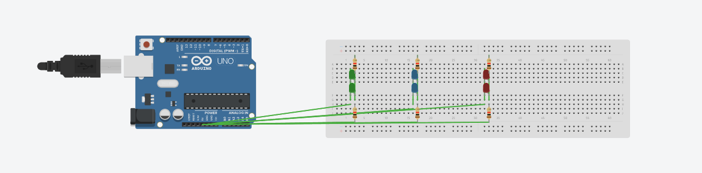

I did this project to learn hardware. I unfortunetly dismanteled this project and only have one video of it. However, using circuit simulating software, I can recreate the project using an Audrino.

This project was created for the purpose of presenting in my school science fair. It is safe to say it worked
as I was one of three to be promoted to district. Below is a chart showing the number of times the agent touches the target at specific time points.
![A line graph titled Hits vs. Time tracking the growth of hits over a 2-hour period, divided into 10-minute intervals. The y-axis ranges from 0 to 800 hits, and the x-axis displays time. The data shows an exponential-like growth curve: 10 min to 40 min: Hits start near 0 and rise very slowly, staying under 25. 50 min to 1 hour: Hits rise slightly from around 30 to roughly 70. 1 hr 10 min to 1 hr 30 min: Growth begins to accelerate, moving from about 80 hits to 220 hits. 1 hr 40 min to 1 hr 50 min: The curve continues upward, reaching approximately 340 hits and then 410 hits. 2 hours: A sharp final spike brings the total to approximately 650 hits.](Stats.png)